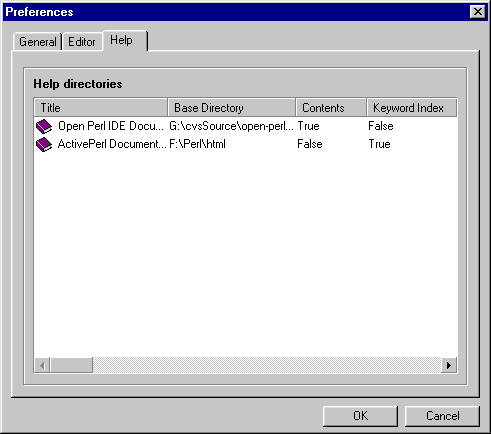
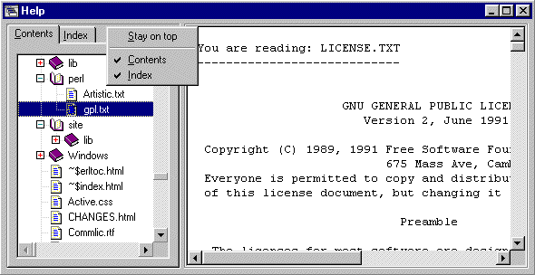
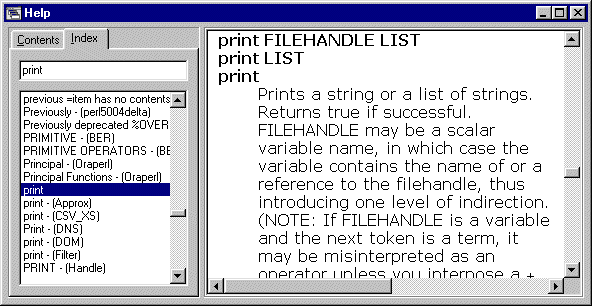
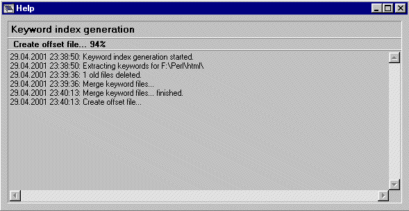

|
Open Perl IDE - User Manual Version 0.9.8.168a 6 Help System This section explains the concepts of the highly configurable Open Perl IDE help system. 6.1 Help Configuration The complete help data consists of several main help topics. Each main help topic has a descriptive title, is associated with a base directory and
These main help topics can be configured on the "Preferences | Help" page as follows:
Figure 6-1: Example Configuration of main help topics  6.2 Help Viewer You can open the help viewer by choosing Contents or Index from the Help Menu or by pressing F1 from within an editor window. The help viewer is a dockable window, however, the following screenshots show the help viewer in floating state as a stand alone window. Figure 6-2: Help Viewer Contents page  In the contents tree, Shell Links are automatically resolved to the source document. So it is possible to create an independent contents organization containing shortcuts to the original files. The next screenshot shows a typical help viewer, if the Perl command "print" has been typed into an editor window and then F1 has been pressed. Figure 6-3: Help Viewer Index page  If the help viewer has been opened from an editor window with F1, then the ESC - Key switches the focus back to the editor window. The keyword index is automatically rebuilt, if the help configuration has been changed: Figure 6-4: Keyword index generation  6.3 Help System Internals The keyword index generation consists of several steps: For each main topic
See the Open Perl IDE Software Design Specification for further information.
|